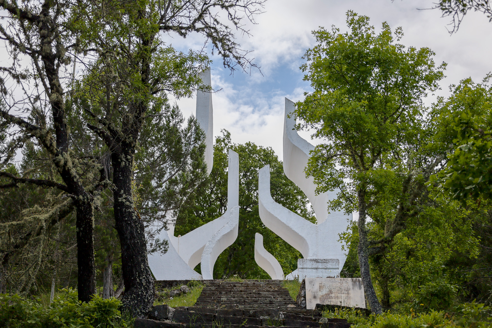
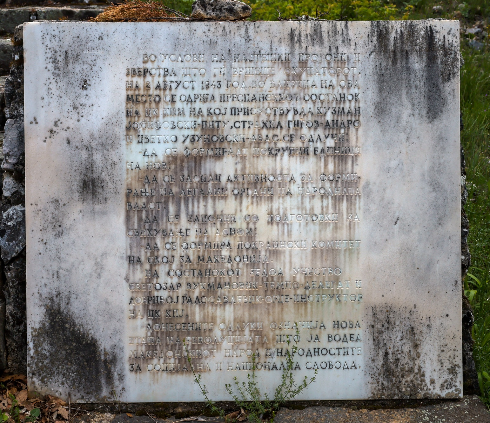
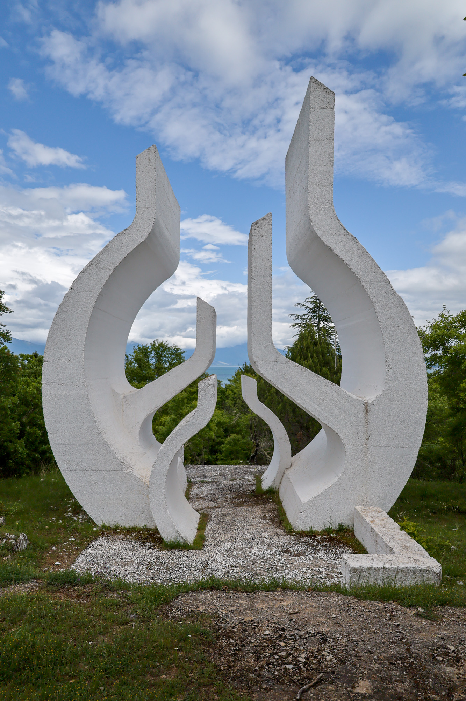
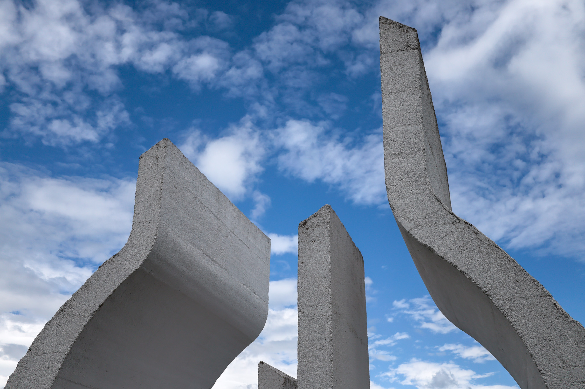
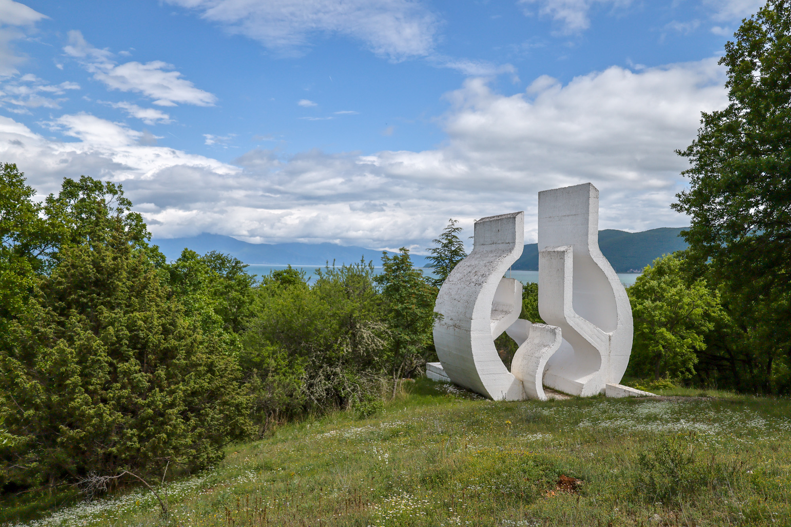

Translation: "In conditions of the most severe persecutions and atrocities committed by the occupier, on August 2, 1943, the Prespa meeting of the Central Committee of the Communist Party of Macedonia was held at this location, which was attended by Kuzman Josifovski-Pitu, Strahil Gigov-Andro and Cvetko Uzunovski-Abbas... to form larger units of the People's Liberation Struggle; to intensify the activity for the establishment of legal bodies of ruling power; to begin preparations for the convening of ASNOM; and to establish a provincial committee of SKOJ for Macedonia. Delegate Svetozar Vikmanovik-Tempo and CK KPJ instructor Dobrivoje Radosavljevic-Ortse attended the meeting. The decisions made here marked a new stage in the revolution led by the Macedonian people and the peoples for social and national freedom."




